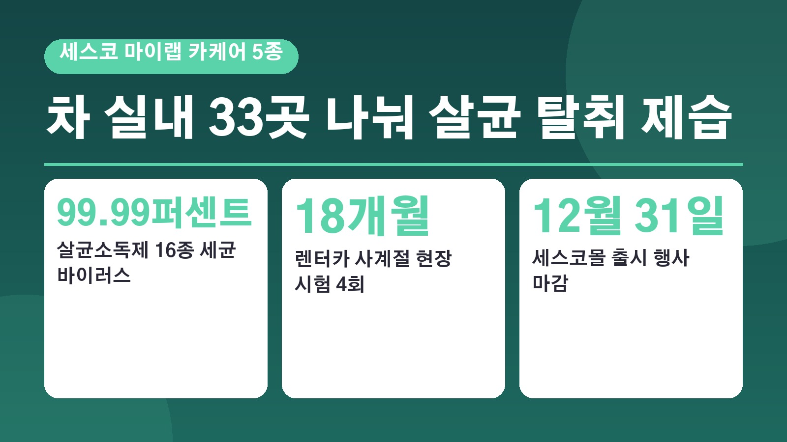
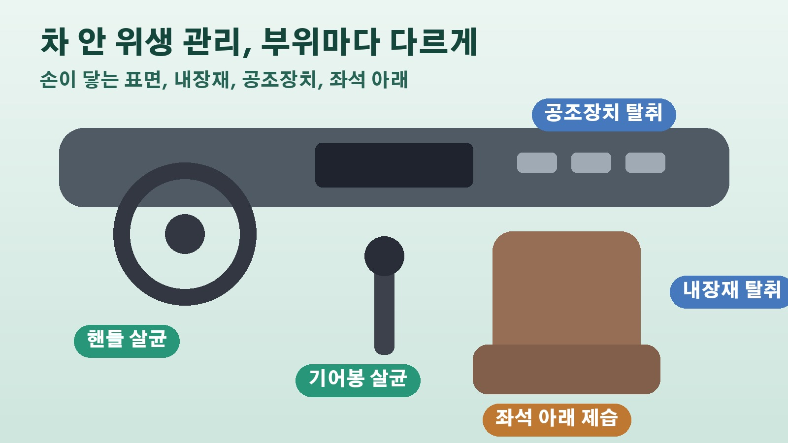

세스코가 차 실내를 33곳으로 나눠 내놓은 카케어 5종, 살균 탈취 제습 제품은 각각 어디에 쓰나

세차장에서 겉은 반짝반짝하게 닦았는데 문을 열면 퀴퀴한 냄새가 남아 있거나 핸들이 왠지 찜찜하게 느껴질 때가 있죠. 출퇴근은 물론 식사와 휴식, 가족 나들이까지 차 안에서 보내는 시간이 늘면서 실내 위생에 신경 쓰는 분들이 많아졌습니다. 이런 흐름에 맞춰 종합환경위생기업 세스코가 차량 실내 전용 위생관리 제품 마이랩 카케어 5종을 내놨는데요. 어떤 제품이 어느 부위를 위한 것인지, 사기 전에 무엇을 보면 좋을지 정리해 봤습니다.
차 안을 33개 위생 관리 지점으로 나눈 이유
세스코는 차 내부를 33개 위생 관리 포인트로 나누고 오염 유형에 따라 살균, 세정, 탈취, 제습 기능을 나눠 담았다고 밝혔습니다. 차 안에는 핸들과 기어봉처럼 손이 자주 닿는 표면, 가죽과 하이그로시처럼 소재가 다른 내장재, 공기가 도는 공조장치, 습기가 머무는 좌석 아래까지 서로 다른 환경이 섞여 있기 때문입니다. 차 안 전체를 한 가지 제품으로 한꺼번에 관리하는 대신 표면 오염, 냄새, 습기 가운데 무엇이 문제인지에 따라 골라 쓰도록 만든 것이 이번 제품군의 핵심입니다.
손이 닿는 곳은 살균소독제와 클리닝 티슈
살균 케어는 두 가지입니다. 살균소독제 500ml는 도어와 핸들, 기어봉처럼 손이 자주 닿는 표면을 관리하는 용도이고, 다용도 살균클리닝 티슈는 대시보드 같은 실내 표면의 오염을 간편하게 닦아 내도록 만들었습니다. 살균소독제는 기후에너지환경부의 살생물제품 승인을 받았고, 인플루엔자 A와 코로나19 바이러스를 포함한 16종 세균과 바이러스에 대해 99.99퍼센트 이상의 살균력을 검증받았다고 회사는 설명했습니다.
냄새는 전문탈취제와 탈취캔, 습기는 슬림형 제습제
에어 케어 제품도 두 가지예요. 마스터 차량용 전문탈취제 500ml는 내장재에 밴 냄새 물질을 없애는 용도이고, 마스터 차량용 탈취캔은 공조장치 안처럼 손이 직접 닿기 어려운 곳의 냄새를 관리합니다. 탈취 제품은 공인시험기관에서 99퍼센트 이상의 탈취 성능을 확인했다고 합니다. 마지막 습기 케어 제품인 슬림형 탈취제습제는 좌석 아래나 도어 포켓처럼 좁은 곳에 넣어 두고 습기와 냄새를 꾸준히 잡도록 설계됐습니다.

렌터카에서 18개월 시험하고 성분도 확인
개발 과정도 눈여겨볼 만합니다. 세스코는 SK렌터카와 함께 실제 차량을 대상으로 반복 시험을 했고, 18개월 동안 네 차례에 걸쳐 사계절 현장 시험을 하며 온도와 습도가 바뀌어도 성능이 유지되는지 살폈다고 밝혔습니다. 디스플레이와 하이그로시, 가죽 같은 내장 소재에 써도 괜찮은지도 확인했고요. 일부 제품은 피부 저자극 시험과 함께 가습기 살균제 문제로 알려진 CMIT, MIT, BKC, DDAC 4종 성분의 불검출 시험도 마쳤습니다. 케이카와 오토핸즈 같은 모빌리티 기업의 고객 차량 관리에도 이미 쓰이고 있다고 합니다.
사기 전에 확인할 점과 행사 기간
살균과 탈취 효과는 제품마다 시험 조건과 적용 대상이 다를 수 있으니, 제품에 적힌 용도와 사용 방법을 확인하고 쓰는 것이 중요하다는 점도 기사에서 함께 짚었습니다. 차 안 환기 같은 기본 관리도 같이 해 주는 것이 좋다고 하고요. 출시 기념 행사는 세스코 공식 온라인몰인 세스코몰에서 10월 1일부터 12월 31일까지 진행되니, 제품 구성과 구매 조건은 그곳에서 확인해 보시면 됩니다.
참고한 기사: 이코노미사이언스 차량도 생활공간으로 세스코 차 실내 위생 관리 5종으로 세분화 2026년 10월 8일, 전국뉴스 세스코 자동차 실내 위생관리 시장 공략 살균 탈취 제습 카케어 5종 출시 2026년 10월 14일
태그
세스코카케어 마이랩카케어 차량실내청소 차량탈취제 차량살균 차량제습제 실내세차 세차용품 차냄새제거 카케어